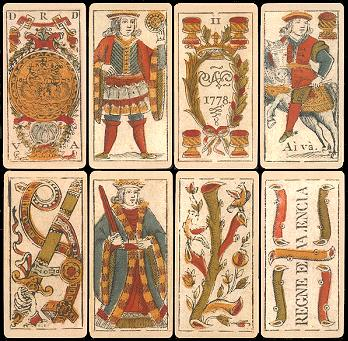

paragrafo inicial
INICIAL
HISTÓRIA
O truco tem origem na Inglaterra, no século XVII, a partir de um jogo chamado Put. De lá, se espalhou pela França (como "Truc") e depois pela Espanha. Os espanhóis e portugueses levaram o jogo para a América Latina, onde ele se popularizou e ganhou variações. No Brasil, o truco chegou com imigrantes espanhóis e portugueses, se espalhando principalmente em São Paulo, Minas Gerais e região Sul, dando origem às versões Paulista e Mineira — cada uma com regras próprias.
TIPOS
A principal diferença entre o Truco Paulista e o Truco Mineiro está na definição das manilhas e na contagem dos pontos. No Truco Paulista, as manilhas são móveis e definidas pela “vira” — a carta virada após a distribuição. Já no Truco Mineiro, as manilhas são fixas: 4 de paus, 7 de copas, ás de espadas e 7 de ouros. Na pontuação, o Truco Mineiro conta os pontos de 2 em 2, e os pedidos de truco avançam para 4, 6, 9 e 12. No Truco Paulista, a contagem é de 1 em 1, e os pedidos sobem para 3, 6, 9 e 12.
| Mineiro | Paulista |
| Pontos contam de 2 em 2 | Pontos contam de 1 em 1 |
| Manilhas fixas | Manilhas móveis |
| Pedido de truco avançam em 4, 6, 9 e 12 | Pedidos de truco avançam em 3, 6, 9 e 12 |
HISTÓRIA
O truco tem origem na Inglaterra, no século XVII, a partir de um jogo chamado Put. De lá, se espalhou pela França (como "Truc") e depois pela Espanha. Os espanhóis e portugueses levaram o jogo para a América Latina, onde ele se popularizou e ganhou variações. No Brasil, o truco chegou com imigrantes espanhóis e portugueses, se espalhando principalmente em São Paulo, Minas Gerais e região Sul, dando origem às versões Paulista e Mineira — cada uma com regras próprias.